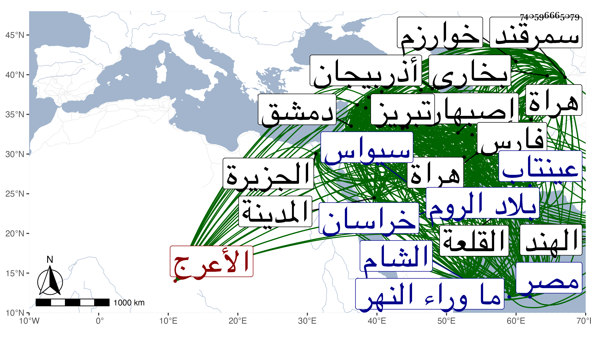

0902Sakhawi.DawLamic.ITO20230111-ara1.EIS1600.740596665079
Biography ID: 740596665079
192
تيمور وهو تمرلنك بن طرغاي الحفظاي الأعرج وهو اللنك بلغتهم فعرف بتمر اللنك ثم خفف فقيل تمرلنك . تغلب على سلطانهم المتصل نسبه بعظيم القان إلى حفظاي واسمه محمود وكان ابتداء ملكه انه لما انقرضت دولة بني جنكزخان وتلاشت في جميع النواحي ظهر في أعقاب بني حفظاي بين كش وسمرقند تيمور هذا وتغلب على ملكهم محمود بعد أن كان أتابكه وتزوج أمه بعد مهلك أبيه واستبد عليه وكان في عصره أمير لبخاري يعرف بحسن من أكابر المغل وآخر بخوارزم من قبل ملوك سراي أهل التخت يعرف بالحاج حسن الصوفي وهو من كبار التتر فنبذ اليهم تيمور العهد وزحف إلى بخارى فملكها من يد حسن ثم زحف إلى خوارزم وتحرش بها وهلك حسن في خلال ذلك وولي أخوه يوسف فملكها تيمور من يده وخربها في حصار طويل ثم كلف بعمارتها وتشييد ما خرب منها وانتظم له ملك ما وراء النهر ونزل بخارى ثم انتقل إلى سمرقند ثم زحف إلى خراسان وطال تحرشه بها وحروبه مع صاحبها شاه ولي إلى أن ملكها عليه سنة أربع وثمانين وسبعمائة ونجا شاه ولي في قلة إلى تبريز وبها أحمد بن أويس بن حسن صاحب العراق وأذربيجان إلى أن زحف عليهم تيمور سنة ثمان وثمانين فهلك شاه ولي في حروبه عليها وملكها تيمور ثم زحف إلى اصبهان فأتوه طاعة ممرضة وحالفه في قومه كبير من أهل نسبه يعرف بقمر الدين وأمده طقتمش صاحب التخت لصراي فكر راجعا إليه وشغل بحروبه إلى أن محى أثره واشتغل بسلطان المغل وزاحم طقتمش مرارا حتى أوهن أمره ثم رجع إلى أصفهان سنة أربع وتسعين فملكها ثم سار إلى فارس وبها أعقاب بني المظفر اليزدي المتغلبين عليها بعد هلاك بني هولاكو فملكها من أيديهم آخر سنة أربع وتسعين ثم زحف إلى بغداد سنة خمس فاجقل عليها أحمد بن أويس المتغلب عليها بعد بني هولاكو وألحقه بالشام واستولى تيمور على بغداد والجزيرة وديار بكر إلى الفرات واتصلت أخباره بالظاهر برقوق ملك مصر فاستعد للقائه وجمع ونزل عسكر حلب بالقرب من الفرات ونزل تيمور بالرها وأخذها ونهبها وبلغه زحف طقتمش في جموع المغل ووصوله إلى الابواب فأحجم وتأخر إلى قلاع الاكراد وأطراف بلاد الروم وأناخ على قرا باغ باش أذربيجان والابواب ورجع طقتمش صاحب اليخت إلى صراي ثم سار إليه تيمور أول سنة سبع وتسعين وغلبه على ملكه وأخرجه من سائر أعماله فلحق ببلغادر ورجع سائر المغل الذين كانوا معه إلى تيمور فأصبحت أمم المغل والتتر كلها في حملته وصاروا تحت لوائه والملك لله فلما بلغه موت الظاهر برقوق فرج وأعطى من بشره بذلك خمسة عشر ألف دينار تهيأ للمسير إلى بلاد الشام فجاء إلى بغداد فأخذها ثانيا لأنها كانت استرجعت من نائبه بها وهرب منها أحمد بن أويس فلحق بالشام ثم قصد تيمور سيواس في آخر سنة اثنتين وثمانمائة فحاصرها مدة ولم يأخذها ثم إلى عينتاب فأجفل أهل القرى بين يديه وجفل أهل البلاد الحلبية واجتمع عساكر الممالك الشامية بحلب ووصل تيمور إلى مرج دابق وجهز رسولا إلى حلب فأمر سودون النائب بقتله ثم نزل في يوم الخميس تاسع ربيع الاول سنة ثلاث على حلب ونازلها وحاصرها فخرج النواب بالعساكر إلى ظاهرها من جهة الشمال ما بين نابلي وبالقوسا وتقاتلوا يوم الخميس والجمعة فلما كان يوم السبت حادي عشر الشهر المذكور ركب تيمور وجمع وحشد والفيلة تقاد بين يديه وهي فيما قيل ثمانية وثلاثون وكان قد دخل بلاد الشام في جموع وأمم لا يعلمها الا الله من ترك وتركمان وعجم وأكراد وتتار وزحف على حلب فانهزم المسلمون من بين أيديهم وجعلوا يلقون أنفسهم من الاسوار والخنادق والتتار في أثرهم يقتلونهم ويأسرونهم إلى أن دخلوا حلب عنوة بالسيف فلجأ النساء والاطفال إلى الجوامع والمساجد فلم يفد ذلك شيئا واستحر القتل والاسر في أهل حلب من التتار فقتلوا الرجال وسبوا النساء والأطفال وقتل خلق كثير من الاطفال تحت حوافر الخيل وعلى الطرقات وأحرقوا المدينة وكانت وقعة فظيعة ثم في يوم الثلاثاء رابع عشره تسلم قلعتها بالامان وصعد اليها في اليوم الذي يليه وجلس في إيوانها وطلب القضاة والعلماء للسلام عليه فامتثلوا أمره . وجاءوا إليه في ليلة الخميس فلم يكرمهم وجعل يتعنتهم بالسؤال وكان آخر ما سألهم عنه أن قال ما تقولون في معاوية ويزيد هل يجوز لعنهما أم لا وعن قتال علي ومعاوية فأجابه القاضي علم الدين القفصي المالكي بأن عليا اجتهد وأصاب فله أجران ومعاوية اجتهد وأخطأ فله أجر واحد فتغيظ من ذلك ثم أجاب الشرف أبو البركات موسى الأنصاري الشافعي بأن معاوية لا يجوز لعنه لأنه صحابي فقال تمرلنك ما حد الصحابي فأجابه القاضي شرف الدين أنه كل من رأى النبي صلى الله عليه وسلم فقال تمرلنك فاليهود والنصارى رأوا النبي صلى الله عليه وسلم فأجاب بان ذلك بشرط كون الرائي مسلما وأجاب القاضي شرف الدين بأنه رأى حاشية على بعض الكتب أنه يجوز لعن يزيد فتغيظ لذلك وذلك بعد أن وعد بالعفو ثم أمر بالانصراف وذلك في الثلث الأول من ليلة الخميس المسفرة عن سادس عشر فانصرفوا ثم ان تمرلنك حضر إلى مقام إبراهيم الخليل عليه السلام فجرى له مع القضاة بعض ما اتفق أولا واستمر به إلى قريب طلوع الفجر ثم توجه إلى قاعة السلطان الكائنة بالقلعة وأمر بطلب دراهم ممن هو بالقلعة من الحلبيين فكتبت أسماء الناس وقبض عليهم وعوقبوا بأنواع من العذاب بحيث لم يسلم من العقوبة الا القليل ونهبوا القلعة وأخذوا من الأموال والأقمشة ما أذهل التتار ولم يظفروا في مملكة بمثله وأقام التتار بحلب يعاقبون ويأخذون الأموال إلى يوم السبت مستهل أو ثاني ربيع الآخر ، ثم رحل إلى جهة دمشق وترك بحلب طائفة من التتار بالقلعة وبالمدينة وأمر على القلعة الأمير موسى ، وكان فيه لطف على ما قيل واحسان معروف وحبس من كان في القلعة من الأعيان بها تحت أيدي التتار ولم يسلم من ذلك الا من هرب فوصل تمر إلى دمشق وكان قد وصل اليها الناصر فرج بعساكر الديار المصرية لدفع التتار وحصل بينهم قتال أياما ثم إن العسكر المصري وقع الخلف بينهم في الباطن وداخلهم الفشل فانكسروا وولوا راجعين إلى جهة مصر ، واقتفى التتار آثارهم يسلبون من قدروا عليه أو لحقوه ورجع السلطان إلى مصر وأخذ تمرلنك دمشق وفعل بها أعظم من فعله بحلب فقصد من بالقلعة أن يمتنع منه فأخذ بالأخشاب والتراب والحجارة وبنى برجين قبالة القلعة من ناحية جسر الزلابية فأذعنوا حينئذ ونزلوا فتسلمها ونهب المدينة وخربها خرابا فاحشا لم نسمع بمثله ولم يصل التتار أيام هولاكو إلى قريب مما فعل بها التتار أيام تيمور واستمر بدمشق إلى العشر الثاني من شعبان ثم رجع إلى ناحية حلب قاصدا بلاده فلما قرب منها أمر من كان من التتار بها بالرحيل وان يصحبوا من بالقلعة من المعتقلين خلا القضاة فأطلق الشرف موسى الانصاري والكمال عمر بن العديم وجماعة معهم وأخذ بقيتهم إلى جهة بلاده فمنهم من هرب من أثناء الطريق ومنهم من استمر معهم عجزا ورحل التتار كما أمرهم تمرلنك من حلب في العشر الثاني من شعبان وأسروا جميع من صادفوا في طريقهم من النساء والصبيان بعد أن أحرقوا حلب مرة ثانية وهدموا أبراج القلعة وسور المدينة وخربوا المساجد والجوامع والمدارس وقتلوا وسبوا وأسروا واستحلوا الدماء والفروج وقال الشعراء في ذلك قصائد شبه الرثاء والتوجع ونحو ذلك ، ولما رجع إلى جهة بلاده أناخ على قرا باغ إلى السنة الثانية وهي سنة أربع فجمع وحشد وقصد بلاد الروم فجمع سلطانها أبو يزيد عسكره وتقدم كل من الفريقين إلى الآخر فحصلت مقتلة عظيمة انكسر فيها صاحب الروم وأسر وتفرق شمل عسكر الروم فأخذ تمرلنك ما يلي أطراف الشام من بلاد الروم وأخذ برصا وهي كرسي مملكة الروم ثم رجع إلى بلاده ومعه أبو يزيد صاحب الروم معتقلا فتوفى في اعتقاله من السنة واستمر تمرلنك في بلاد العجم ودخل الهند فنازل مملكة المسلمين حتى غلب عليها ثم جرى بينه وبين الناصر فرج مراسلات وصلح وأهدى كل منهما للآخر ، وكان شيخا طوالا مهولا طويل اللحية حسن الوجه أعرج شديد العرج سلب رجله في أوائل أمره ومع ذلك يصلي عن قيام ، مهابا بطلا شجاعا جبارا ظلوما غشوما فتاكا سفاكا للدماء مقداما على ذلك أفنى في مدة ولايته من الأمم ما لا يحصيهم الا الله ووصل إلى أطراف الهند وخرب بلدانا كثيرة يفوتها الحصر جهير الصوت يسلك الجد مع القريب والبعيد ولا يحب المزاح ويحب الشطرنج وله فيها يد طولى ومهارة زائدة وزاد فيها جملا وبغلا وجعل رقعته عشرة في أحد عشر بحيث لم يكن يلاعبه فيه إلا أفراد يقرب العلماء والشجعان والاشراف وينزلهم منازلهم ولكن من خالف أمره أدنى مخالفة استباح دمه فكانت هيبته لا تداني بهذا السبب وما أخرب البلاد الا بذلك فانه كان من أطاعه من أول وهلة أمن ومن خالفه أدنى مخالفة وهي ، ذا فكر صائب ومكائد في الحرب عجيبة وفراسة قل أن تخطئ ... عارفا بالتواريخ لادمانه على سماعه لا يخلو مجلسه عن قراءة شيء منها سفرا أو حضرا مغري بمن له معرفة بصناعة ما إذا كان حاذقا فيها ، أميا لا يحسن الكتابة حاذقا باللغة الفارسية والتركية والمغلية خاصة ويعتمد قواعد جنكزخان ويجعلها أصلا ولذلك أفتى جمع جم بكفره مع أن شعائر الاسلام في بلاده ظاهرة وله جواسيس في جميع البلاد التي ملكها والتي لم يملكها وكانوا ينهون إليه الحوادث الكائنة على جليتها ويكاتبونه بجميع ما يروم فلا يتوجه إلى جهة الا وهو على بصيرة من أمرها ، وبلغ من دهائه أنه كان إذا أراد قصد جهة جمع أكابر الدولة وتشاوروا إلى أن يقع الرأي على التوجه في الوقت الفلاني إلى الجهة الفلانية فيكاتب جواسيس تلك الجهات فتأخذ الجهة المعينة حذرها ويأمن غيرها ، فإذا ضرب النفير وأصبحوا سائرين ذات الشمال عرج بهم ذات اليمين فإلى أن يصل الخبر الثاني دهم هو الجهة التي يريد وأهلها غافلون . مات وهو متوجه لأخذ بلاد الخطا على مدينة اترار في ليلة الاربعاء سابع عشر شعبان سنة سبع وأرخه المقريزي في التي تليها وأظنه غلطا . ولم يكن معه من بنيه وأحفاده سوى حفيده خليل بن ميران شاه وحسين ابن أخته فاتفق رأيهم على استقرار الحفيد المذكور عوضه بسمرقند مع وجود أبيه وعمه شاد رخ بهراة ووجود بير عمر في فارس وكان تيمور قد جعل أولا ولي عهده حفيده محمد سلطان فمات على أقشهر من بلاد الروم في سنة خمس وثمانمائة فعهد إلى أخيه بير محمد وأبعده فصار ولي العهد وهو بفارس ، فلما مات تيمور واستولى حفيده خليل على الخزائن وتمكن من الأمراء والعساكر بذل لهم الاموال العظيمة حتى دخلوا تحت طاعته وسار فلما قارب سمرقند تلقاه من بها وعليهم ثياب الحداد وهم يبكون ومعهم التقادم فقبلها منهم ودخلها وجثة جده تيمور في تابوت أبنوس وجميع الملوك والامراء مشاة مكشوفة رءوسهم وعليهم ثياب الحداد حتى دفنوه وأقاموا عليه العزاء أياما ولعله قارب الثمانين فإنه قال للقاضي شرف الدين الانصاري وغيره كم سنكم فقال له الشرف سني الآن سبعة وخمسون سنة وأجابه غيره بنحو ذلك فقال أنا أصلح أن أكون والدكم . وبالجملة فكانت له همة عالية وتطلع إلى الملك وكان مغري بغزو المسلمين وترك الكفار وصنع ذلك في بلاد الروم ثم في بلاد الهند ، وأنشأ بظاهر سمرقند عدة بساتين وقصور عجيبة فكانت من أعظم النزه ، وبنى عدة قصبات سماها بأسماء البلاد الكبار كحمص ودمشق وبغداد وشيراز وكان يجمع العلماء ويأمرهم بالمناظرة ويسألهم ويعنتهم بالمسائل ، ولما مات كان له من الاولاد ميران شاه وشاه رخ وبنت اسمها سلطان تخت ومن الزوجات ثلاث ومن السراري شيء كثير ، وأخباره مطولة وقد أفردها بعض من أخذت عنه بالتأليف والقدر الذي اقتصرت عليه هنا اعتمدت فيه ابن خطيب الناصرية وشيخنا ، وترجمته في عقود المقريزي نحو كراستين .
